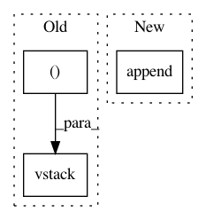

2e7c0700d00da702cdccb7c19b6fe1857b5bd1b7,imblearn/under_sampling/prototype_generation/cluster_centroids.py,ClusterCentroids,_sample,#ClusterCentroids#Any#Any#,111
Before Change
else:
target_class_indices = np.flatnonzero(y == target_class)
idx_under = np.concatenate(
(idx_under, target_class_indices), axis=0)
X_resampled = np.concatenate((centroids))
if sparse.issparse(X):
X_resampled = sparse.vstack([sparse.csr_matrix(X_resampled),
safe_indexing(X, idx_under)])
else:
X_resampled = np.vstack((X_resampled, safe_indexing(X, idx_under)))
y_resampled = np.hstack((y_resampled, safe_indexing(y, idx_under)))
After Change
X_new, y_new = self._generate_sample(
X, y, self.estimator_.cluster_centers_, target_class)
X_resampled.append(X_new)
y_resampled.append(y_new)
else:
target_class_indices = np.flatnonzero(y == target_class)
X_resampled.append(safe_indexing(X, target_class_indices))
y_resampled.append(safe_indexing(y, target_class_indices))
In pattern: SUPERPATTERN
Frequency: 3
Non-data size: 3
Instances
Project Name: scikit-learn-contrib/imbalanced-learn
Commit Name: 2e7c0700d00da702cdccb7c19b6fe1857b5bd1b7
Time: 2017-08-24
Author: g.lemaitre58@gmail.com
File Name: imblearn/under_sampling/prototype_generation/cluster_centroids.py
Class Name: ClusterCentroids
Method Name: _sample
Project Name: scikit-optimize/scikit-optimize
Commit Name: e7d1f86eff45bae2400fe0b4fc5d7312902255d6
Time: 2016-07-21
Author: manojkumarsivaraj334@gmail.com
File Name: skopt/gp_opt.py
Class Name:
Method Name: gp_minimize
Project Name: scikit-optimize/scikit-optimize
Commit Name: e7d1f86eff45bae2400fe0b4fc5d7312902255d6
Time: 2016-07-21
Author: manojkumarsivaraj334@gmail.com
File Name: skopt/tree_opt.py
Class Name:
Method Name: _tree_minimize